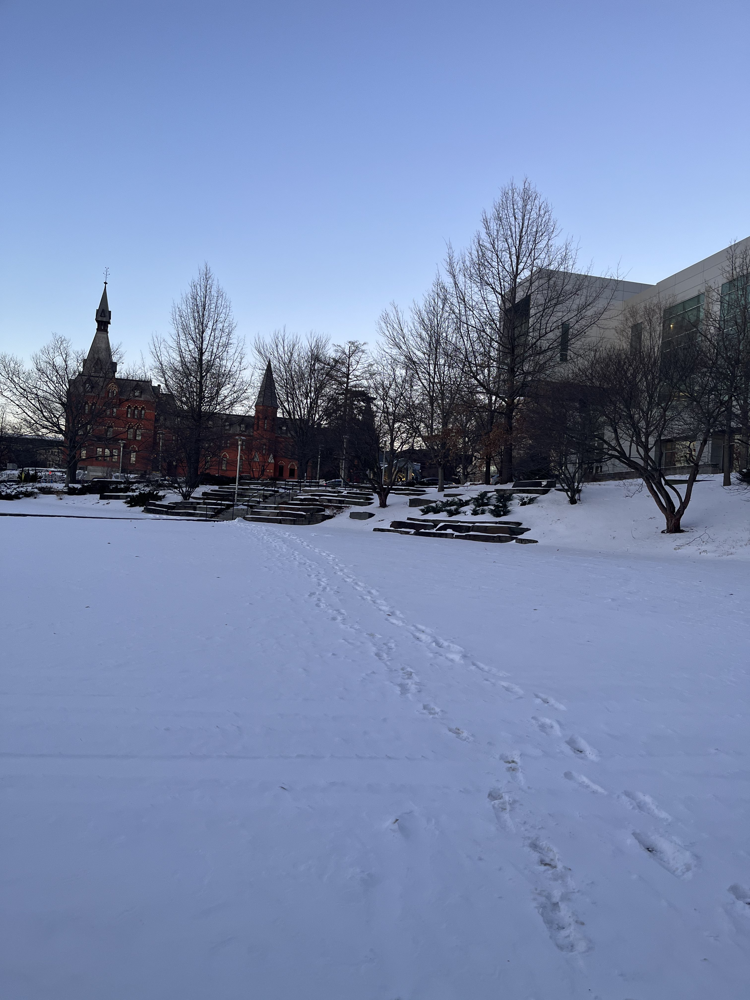

Journal Entry Two
1/25/2024
UPDATE!
Hello! Today is January 25th, 2024. I just wanted to write a journal update for what has been happening in my life for the couple of weeks since my last journal entry.

As you might know, I am a college student! And that means that life in college is rather busy heh. Five days ago, I started my second semester of college! Yay! My winter break was a month long, but for some reason it felt oddly short. (Probably because I wanted it to last longer haha). But yeah, classes started back up again and I've been back on the grind, getting work done and slowly getting back into the rhythm of college life.
Cornell is a winter wonderland! :P (I haven't gotten to go sledding yet though).
I'll be honest, this past week has been kind of a blur. It has gone by pretty fast, but also very slow. I might be going crazy, I don't know. But, things have definitely ramped up. Supposedly, this week is syllabus week, but I've kind of been crowded with work already. At least I have things to do now though :D. I started wearing boots at the beginning of the week as there was a lot of snow and slush on the ground, but I realized that it also made me walk slower. There were several occasions where I was panicking trying to get to class on time. 9 AMs are brutal...
I had to sit on the balcony of the auditorium in Statler Hall because I was late to CS2110.
Although, there have been a lot of positives since the start of this week. I made it my New Years resolution (kind of on a whim) to start taking care of myself. That meant eating better (trying to eat breakfast more), sleeping early, and working out more consistently. I think every day I have been sleeping from 10 PM - 12 AM, which is actually amazing because I'm getting 7-9 hours of sleep. I feel so much better when I wake up and I think it helps me learn better. Keep in mind that my sleep schedule during break was horrible. I was sleeping at like 3 AM and waking up at noon... Not only that, but I've also been trying to make it a priority to go to the gym after my classes are over at least 4 times a week. The first day was super crowded so I was unable to go, but the days after there were less people. I feel that working out really helps direct my stress and my constant thinking into a more productive and healthy place. Although, I do get tired after I work out so maybe I need to take more naps?
I surprised myself by running an entire 5k on a treadmill without stopping at a decent pace! I haven't ran multiple miles without stopping since high school so I was extremely happy and tired :D
I have also been eating more compared to during break. I wasn't taking care of myself during break and I was eating my first meal at like 3 pm every day. Since the start of college, I've been trying to wake up early so I can get breakfast and give myself energy for the day ahead. I'm still working on it though!
Catching up with Jaden over dinner at Okenshields!
I've also been taking care of my skin. My twin, Christopher, knows a lot about skincare, somehow, so I started doing skincare recently. He told me that I'd get acne breakouts once I started, but so far I haven't gotten a lot of acne. To be fair, I've only been using cleanser and moisturizer, which is less than what Christopher uses so I don't know. I'm liking doing my skincare routine in the morning and at night because it gets me to actually wake up and prepare for bed earlier. It is my first accomplishment of the day :D. On another note, I also walked through a new hall. I forgot what it was called, but I went through Mann Library and a couple other halls to get there. The interior was lowkey not very appealing, but the windows had amazing views!
An amazing view over Cornell at night.
This week, we also had our first outreach event for AAIV. We handed out hand warmers and helped make stress balls for students. I only got to help out for 30-ish minutes, but there were definitely people coming up to our tables. I'm really hoping to meet new people and see them come to love the AAIV community as I do! In addition to all the fun stuff so far during the week, there has been a lot of studying and trying to make sure I'm on top of my classes. Today, I had one class but was at the library for 6 hours. My go-to study spot is one of the big rooms in Uris Library. It's an amazing spot because its so beautiful in there!
My go-to spot in Uris Library!
I got some work done, but I was pretty tired for some reason so I wasn't as productive as I hoped. Today was actually pretty foggy, which is a bit different from the days before. The fog made the atmosphere so eerie, but beautiful. I'm so glad I came to Cornell and days like these really make me look around and gaze in awe of the beauty of the school. Hopefully there are more of these days in between the snow days so that I don't always get hit by small hail pebbles on my way back to my dorm from class LOL.
Today's fog was both eerie and beautiful.
But ultimately, I am excited for what has yet to come. I dropped one of my classes because turns out I really do need a lunch break heh. I might try to find another class to take its place, but right now I am in a good spot. There is still so much ahead and I am really grateful to be in the spot I am at now. Cheers to the first week of school and my health, both mentally and physically! :D